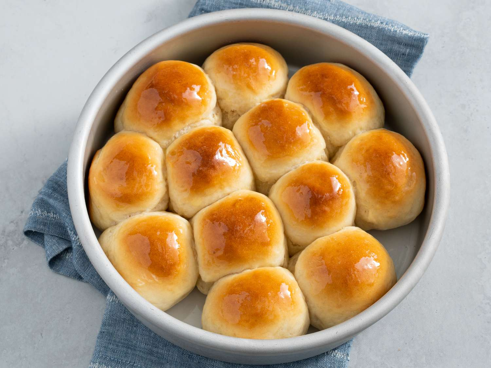

Rolls

Ingredients
- 1 cup warm water
- 4 teaspoons of quick acting yeast
- 1 Tablespoon of sugar
- 1 cup of Milk
- 1/3 cup of shorting
- 1/2 cup of sugar
- 3 large egss
- 1 teaspoon of salt
- 6 to 7½ cups of flour
- 2 beaten egg
- 1/3 stick of melted slated butter
- Pour the yeast and 1 Tablespoon of sugar into the warm water and let rise for 15 minutes
- While the yeast is rising, add the milk, 1/2 cup of sugar and shorting to a microwave safe bowl and heat until shorting is melted
- Once yeast has risen, pour yeast mixture into a mixer and beat in eggs
- Add 2 cups of flour and mix
- Slowly pour in the milk/shortening/sugar mixture to the mixer alternating with 2 cups of flour at a time.
- Mix with dough hook until a dough ball is formed
- Place in warm sink bath until dough has doubled in size, roughly about 1 hour
- Preheat oven to 377°F
- After the dough has risen, punch down and form dough balls
- Place dough balls on a greased cookie sheet and cover and let rise again for another 15 minutes
- Spread beaten egg over the tops of the dough balls
- Place in oven for 20 to 25 minutes until tops of rools are brown in color
- Remove from oven and rub rolls with melted salted butter and place back in oven for 1 minutes